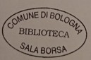
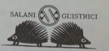
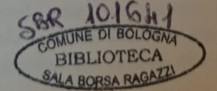

Public library in Bologna, Italy.
german writer, author of The neverending story, Jim Button and Luke the Engine Driver and Momo.
German writer and graphic designer, created the original illustration for the first edition of The neverending story, born in 1949.
bolognese painter, lived 1774–1848, famous for his work on the Alfabeto pittorico.
italian translator
Main character of the The neverending story. While reading the book he stole a library, he finds himself as a character inside the story. In the pages following the one encoded later, he is called inside the book in order to save Fantasia and his people.
Empress of Fantasia, in the page encoded she is climbing the steps towards the Old Man of the Wandering Mountain seeking to call Bastian into her world and save it by giving her a new name.
Guardian of the book of life in which is written the entire story of Fantasia and his people. This book appears in page 195 and is described with the same phisical characteristics as The neverending story volume in his original edition.



timi pioli, emise un lieve sospiro e si guardò: la sua ampia veste
bianca era tutta strappata, lacerata da pioli, spuntoni e spine.
Be', che le lettere dell'alfabeto non le fossero amiche, non era
cosa nuova per lei. L'antipatia del resto era reciproca.
Ora vedeva davanti a sè l'uovo, con l'ingresso rotondo dove
finiva la scala. Vi entrò e l'apertura si richiuse all'istante dietro
di lei. Senza un sol gesto rimase lì nel buio, in attesa di ciò che
sarebbe accaduto.
Ma per un lungo, lunghissimo momento, non accadde assolu
tamente nulla.
«Eccomi, sono qui», disse finalmente l'Infanta Imperatrice a
voce bassa nell'oscurità. La sua voce riecheggiò come se avesse
parlato in una grande sala deserta. Oppure era un'altra voce più
bassa che le aveva risposto con le sue stesse parole?
A poco a poco riuscì a individuare in mezzo a tutto quel buio
un debole bagliore rossastro. Questo irradiava da un libro che on
deggiava sospeso nell'aria, aperto, proprio nel mezzo dello spazio
a forma di uovo. Il libro pendeva obliquo, così che se ne poteva
vedere il dorso. Era rilegato in seta color rubino cupo e, come sul
l'amuleto che l'Infanta Imperatrice portava al collo, sulla coperti
na si vedevano due serpenti che si mordevano la coda, formando
un ovale. E in quell'ovale stava il titolo:
I pensieri di Bastiano si confusero. Ma quello era il libro che sta
va leggendo in quel momento! Lo guardò ancora attentamente.
Sì, non c'era alcun dubbio, quello di cui si parlava nel racconto
era il libro che lui aveva in mano. Ma come poteva questo libro
comparire come oggetto nella storia che esso stesso narrava?
L'Infanta Imperatrice si era avvicinata e ora, dall'altra parte del
libro ondeggiante nell'aria, vide il volto di un uomo illuminato dal
basso da una luce azzurrognola che veniva dalle pagine aperte.
Quel bagliore verde-azzurro veniva dalla scrittura del libro, che
era appunto di quel colore.